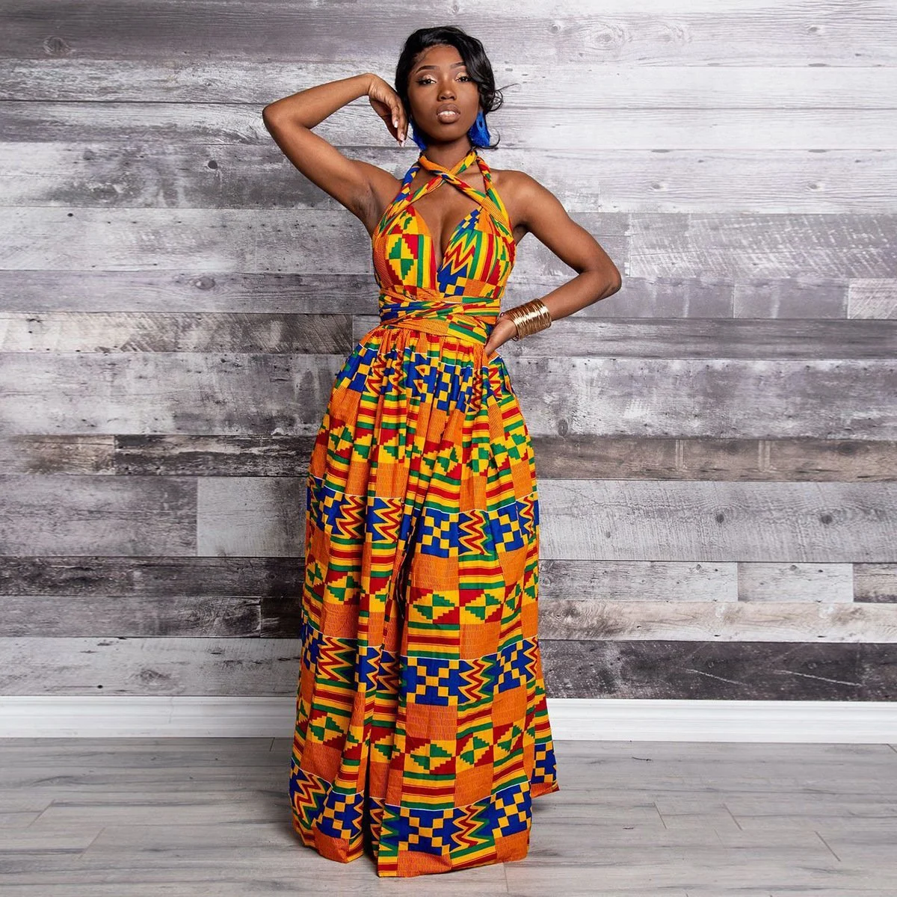

WHAT'S IN YOUR WARDROBE?

CLOTHES
are a feature of all human societies. They are made of fabrics or textiles, but over time have included garments made from animal skin and other thin sheets of materials and natural products found in the environment, put together. Clothes serve many purposes: it can serve as protection from the elements, insulate against cold or hot conditions and is a symbol of social status and a form of soft power